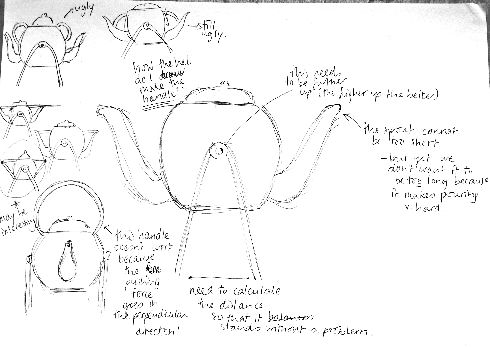
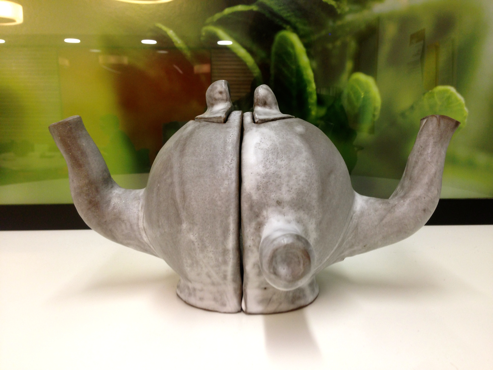
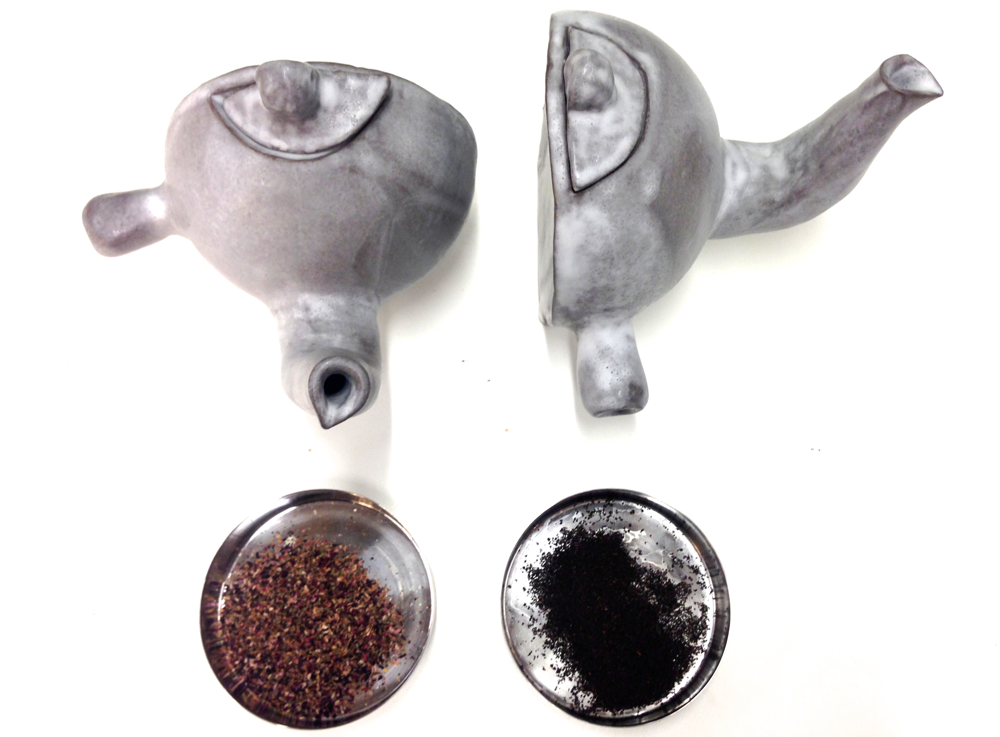

DETAILED DESIGN & CAD
Click on a subsection to know more Final design | CAD
The Perfect Teapot
Below are the sketches of my 'final' idea: A teapot that brews two types of tea separately while avoids the unnecessary bulk of a two-spouted teapot. Satisfies both those who like mixing tea, who enjoy tea when shared with other people (who may like another type of tea), being compatible too when user brews tea for themselves.

3D MODELLING: CATIA
CATIA was harder to install than to use. Once I installed on my Mac (I used a virtual machine, 'VMWare'), within two days I felt quite confident with the way it works. Although at first we had a love-hate relationship, after hours of learning how it functions CATIA and I ended up beging friends (I hereby claim that I can make a double-spout, double-chamber teapot on as stand in less than fifteen minutes). I got into it quite a lot and I am currently working on a 3D model of the UCL portico to print off for a crowdfunded project. Being able to 3D model in CATIA has changed a little bit my way of approaching design. I spent a lot of time during the early stages of my project thinking about what the best design would be. Just like it is intuitive to draw ideas on a piece of paper to visualise them, it has now become intuitive to try and 3D two or three versions of the Perfect Teapot and see which one works best. Having access to a 3D printer and knowing how to use CATIA, 3Ds max or Google Sketchup among other programs for 3D modelling, means bridging significantly the gap between concept and product.

WHAT TO REMEMBER WHEN USING CATIA
1. A key thing when using CATIA is to be able to effectively manipulate parts, which are along the same lines of layers in Photoshop. Everytime you make a modification or a stage in the process, you must create a part and it is very important to be organised with parts because you really don't want to end up with one part with a lot of modifications. If you then need to delete only one of the many modifications made in that part, you won't be able too - you'll have to delete the whole part.
So make sure to create a new part every single time.
2. Remember to set the CATIA preferences to Mechanical/Part Design by clicking on the Start button on the top left corner to have the correct functions, display and specs for this kind of CATIA drawing.
3. It is very useful to have the Sketch Tools visible when you're manipulating Sketch. These can be shown by clicking View/Toolbars/Sketch Tools
4. Last but not least - SAVE THE FILE AS .STL NOT AS .CATPART (this will save you a lot of time later on when printing it through the MakerBot software at the IoM workspace.
Below is a visual account of the process of designing my final design on CATIA, together with some notes I took while doing it.
These are the steps I followed on CATIA when drawing my final design:
- Created a new part and saved it as Virginia Final Teapot in the Engineering Design folder.
- Chose the Mechanical/Part Design on the Start button, in order to have all the correct functions.
- Created a 2D semi circle with the sketch button (on the yz plane) and then made it 3D with a 180 degree shaft (using Shaft function).
- On the zx plane, I drew the spout path using the line function in the sketch function. Then exit Sketch.
- Made the line go white (not orange) by clicking away, and then use the Plane function selecting the spout line, and select each point at the start and end of the spout, one at a time.
- Drew the radius (dimensions on notebook notes above) on each of the point planes created in the previous step. Do so using the circle function in Sketch (one at a time), then exit Sketch and make a 360 degree shaft to make the spout from the two 2D circles previously drawn. Unselect the 'Snap to Point' function in Sketch Tools (see 'What to Remember when Using CATIA' section)
- Flattened the top and bottom by drawing a rectangle on the 2D area (zx plane) at the top and bottom of my teapot that I want to be cut off (one at a time, i.e. using 2 separate PartBody parts). Then I exited Sketch and using the Pocket function (length 100mm, Mirrored Extent *important*)
- Now I have a spout attached to a half-circle with the top and bottom 1cm flattened. Both are solid and not empty. What I did next is make it empty inside, using the shell function in Insert/Dress-Up Features/Shell...
- Selected the bottom plane and used Pad Definition function to create the base (length 10mm).
- To mirror the teapot to create the other half-teapot without both half-teapots merging, CATIA only allowed me to mirror them separately if I had something in the middle between both teapots, and I 'mirrored' my whole Part around that object. So I drew a cuboid (as shown on the pictures) and I mirrored it. It worked; but I now had the problem of getting rid of the cuboid (the parent of following parts - the mirrored parts) without getting rid of the children (i.e. my mirrored teapot)
- Saved file in .stl format
3D Printed Product (old design)
Before showing the 3D printed prototype, I have added some detail sketches of this design (so as to justify that it onced seemed like a decent idea):

Below is the 3D printed version of my previous prototype. It differs from my final design in that the updated version is not a rocking teapot, and instead has been split into two distinct half-teapots in order to abolish the issue that arises from having a two spouted teapot design.


As described in the research section, I summarised good design as one that captures the real value of the object and makes it core to the experience of using it. To put it simple:

And this is precisely why I tried avoiding the bulkiness, uncommon concept of a two-spouted teapot, while still offering a 'two-spouted experience'.
SPLITTING THE TEAPOT
I loved the idea of splitting the teapot as soon as it came to me because it felt like I was able to keep the common experience of pouring tea from a one-spouted teapot, and yet it also embodied the sharing experience within the social aspect of tea.
And so few weeks later... *drum roll*

Probably, the thing that I like the most about this idea of splitting a teapot is that it overcomes the impossibility of 'wanting a two spouted teapot but not really wanting the teapot to be bulky'. At first, the idea seemed failed. I thought, this is why no teapot has two spouts. It's just not comfortable, or useful, to have two spouts on the same teapot, cause it significantly increases the risk of the hot tea to be spilled from different ends. My new and final design kept the same idea of allowing the brewing of different teas, but redefined the two-spouted teapot in order to overcome the design failure that a teapot with two spouts inherently holds.
THE HANDLE
A fundamental feature of my design that I had to critically approach was the handle. The ceramic structure with two half teapots implied that a handle on the top was too fragile and, according to Cristina, it would be too risky to try and form a round handle over the top of the lid, for the walls of the teapot were too thin to securely sustain such a relatively large pulling force. Hence, after a few days of brainstorming, I came across the following design:
I immediately realised this would be perfect for my teapot; I even found it extremely easy and secure to hold the teapot round that pivot when trying out the teapot and teacup shown in the photo above. I told Cristina and she loved the idea. The next day, we added it to the still-wet clay prototype.
THE SHARING CONCEPT AT THE CORE OF THE DESIGN
This is an excerpt of my final report, that nicely summarises my thought process and validates the idea of a sharing teapot:
Throughout the past, tea has become a focal point for social gatherings in several parts of the world with completely different cultures, simultaneously. Chinese and Japanese tea ceremonies, tea as a classist tool in 17th century England, and tea as the main activity in social gatherings in Arab culture are three examples of many sources of evidence for the social, universal essence of tea. It is this core, social element of tea, that raises the importance of the role of the teapot. Teapots allow tea to be what it is; throughout the past is has represented one’s class; one’s manners, hospitality and caring for others; and even one’s spirituality, which will be explored in more detail in this report. Different cultures present very different types of teapots, thereby confirming the major role of a teapot in representing the value system of a society. Alike tea, throughout history and in many different cultures, teapots have been and still are a core element in social interactions.
Because sharing tea is such a key factor of tea culture in many different communities, I've been determined throughout my research to create a teapot that enhances the idea of tea sharing. I've decided to take the approach of expanding the concept of choice over tea; allowing different teas to be bred among visitors or a group of people seemed like a viable market gap to be addressed.
